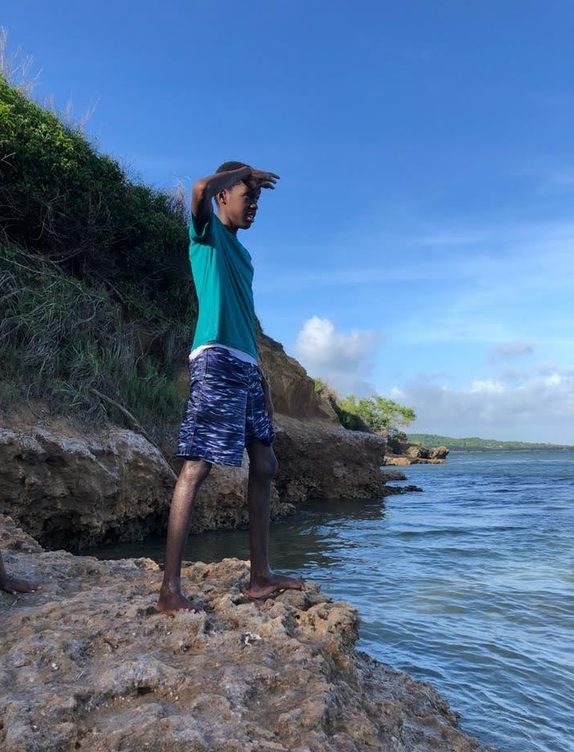

Projects portfolio
Here are some images of the projects I have done or been a part of thus far
If you don’t already know, I am Tristan Thompson a software and web dev enthusiast, Musician, Artist, and a first-year student at the University of the West Indies in Jamaica, where I am pursuing a BSc in Computer Science and a minor in digital media. I’m a creative and talented person that loves music, art, and tech. I have now been exposed to a total of six coding and markup languages which are (Python, Java, HTML, CSS, C++ and Javascript along with nodeJs framework)
I grew up in Bath St Thomas Jamaica and attended the St Thomas Technical High School located in ST Thomas Jamaica, this is where I first obtained an interest in coding and programming. I was first exposed to HTML and CSS and made my first website alongside my group members in the sixth form for an IT SBA (School Based assessment). I enjoyed the experience I had making that website with my group as such I was compelled to do Computer Science at University. I hope to continue to gain a lot of solid skills that will aid me in my future career. On that note, my career interests are in Software development, web development, data science, and digital health. After graduation, I hope to have decided on which of these fields I will be going into and have gained the necessary skills for such, which will allow me to continue to grow on my own so I can be an asset to the working world.
During my time at St Thomas Technical High school, I was involved in several extracurricular activities such as science club, music (school bands and choir), table tennis, volleyball, and the key club I was also the student council secretary.
My Favourite Books |
|---|
| The Silver Sword |
| The Holy Bible |
| Man from Ja |
| The Tempest |

Here are some images of the projects I have done or been a part of thus far
{kind=link}
{kind=link}
{kind=link}
{kind=link}
{kind=link}
{kind=link}